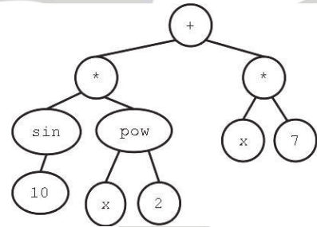

There are 2 different views of Genetic Programming:
Tree Representation is one method of representing programs, this sort of structure was used heavily by LISP and LISP-inspired languages like Clojure. We can define our operators to work on these tree data structures
Linear representation is more common outside of this field, a program is represented as a series of instructions with registers to store data
Graph representations use nodes to contain instructions, edges to control the flow of the program and a stack for storing data.
In a tree representation of a program our leaf nodes are either constants, function variables or even sensor values depending on the domain of the program these are known as the Terminal Set.
They must have an arity of 0.

Functions are described as being -ary with referring to their arity or number of input variables.
We must make sure our set of functions is sufficiently complex for the task but not too rich as we risk overcomplicating the task
Functions must be defined over all inputs, for example we need to define division for input 0 if our function set includes division.
Crossover for tree structures is performed using a process called branch swapping. Here we pick a random branch on each parent and swap them.
In this form of crossover, follow branches from the root, and, as long as the nodes have the same arity, swap them.
-o=point crossover is also possible.
Mutation is performed using branch replacement:
With fixed tree depth :
With a fixed max tree depth
With a fixed maximum tree depth and population size
As program size grows, crossover becomes uneven, we gain unused code and runtime increases. More space is required to store the program and more CPU time is required to run it. Mutation and crossover of unused code lead to identical offspring behaviour
To prevent bloat, we can incorporate program size into to the fitness measure and use special crossover operators